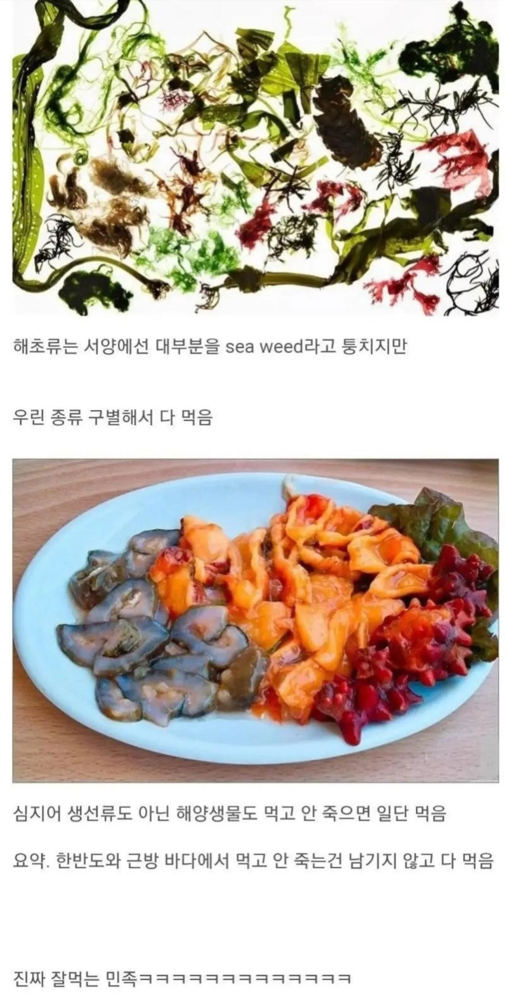
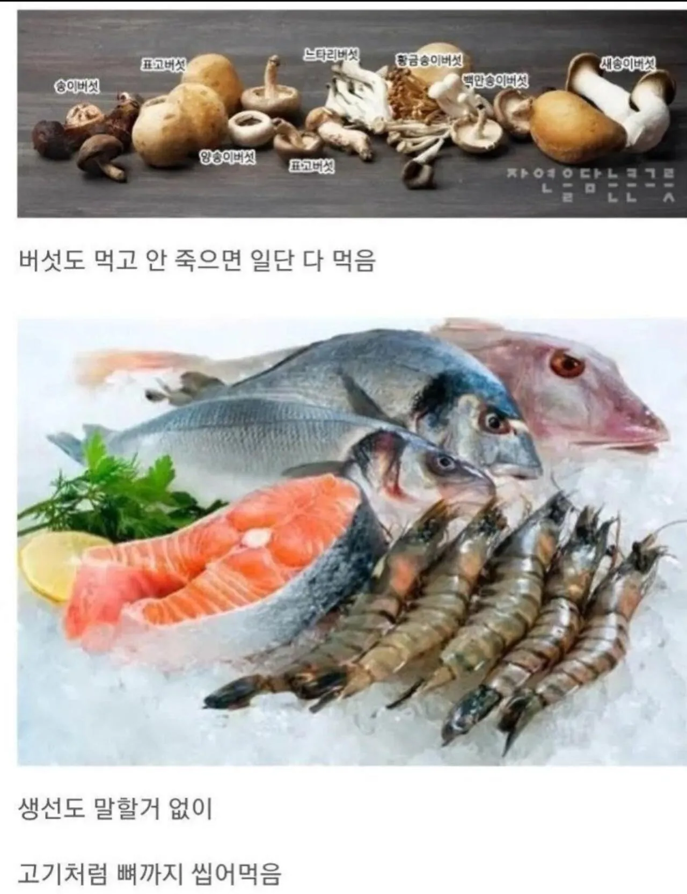

한 3일 굶어 보면 그거보다 달콤한게 없을거야
중국도 별거 다 처먹긴하는데 식탁에서 한국만큼 산나물이 보편화되어있진 않음
돌나물 존나 맛잇어
우리나라도 잘 먹는다고 생각했는데
다른 나라는 차원이 달라
개미 알밥 개 고양이
고양이는 가끔 약재로 쓰고 개는 우리도 자주 먹었어용...
우리나라도 1960년대 80년대까지도 시골 가면 개구리 잡아 구워먹고 메뚜기 매미 잡아먹었음.
조선시대때는 초가집의 지붕에 살던 벌레가 특식이었음.
저렇게 안먹으면 보릿고개에 다 뒤짐
나약해빠진 서양인들은 도전할 수 없는 영역이지
뭐 먹기만하면 키에에엑 알러지ㅣㅣㅣ
먹고 안 뒤지게 만드는 음식의 최고봉은 일본의 볏짚에 소금으로 2년이상 절인 복어알이라고 봄....
난 이거 보면서 생각든게 복어알 절여놓고 1달뒤에 먹어보고 어? 죽네? 하면서 한달단위로 한명씩 죽어가면서 테스트 해봤겠지..?? 그러다가 아 2년 묵히면 독이 없어지는구나! 했겠지..?? 개무섭다 ㄷㄷ
복어알 공략 완성까지 얼마나 많은 하드코어 유저들이 죽었을지 생각만해도 무섭다 ㅋㅋㅋㅋㅋㅋ
사형수로 시험했을수도
방법 어떻게 찾아낸건지 감도 안옴
일설에는 어촌에서 쥐약으로 복어알을 썼다가 남아서 '내년에두 써야징~'하고 쌀겨속에 넣어서 보관했는데 효과 떨어진거 보고 발견했다 이런말이 있긴하더라
오 그때부터 실험용 쥐...
키비악
한 지역에 오래 정착하고 살아서 그런듯
서구는 이민족이 계속 원주민을 대체한 지역?은 먹는게 단조롭고(영국미국)
두릎 먹고 싶다
릅
무릎 팬인듯
우리나라 = 산이 대부분이고 농사 지을 수 있는 작물이 얼마 없음. 미친 4계절
유럽 = 자동차 타고 쭉 가도 평야만 계속 나옴. 추워도 따뜻하고 더워도 시원함
중국보단 덜하고 일본보단 더먹는
개미 안먹잖어
대신 초가집에서 자란 구데기 길가에서 보이는 매미 메뚜기 개구리를 먹었어요
구데기가 아니라 굼뱅이 ㅠ 아무리 그래도 구더기를 먹지는 않았자너
아 맞다 잘못 씀 ㅋㅋㅋㅋ
ㅋㅋㅋㅋㅋㅋㅋㅋㅋ구데기먹는청년
진짜 잘먹는것들은 중국 아니냐 ㄹㅇ 다먹던데
중국은 상다리 빼고 다먹는다잖냐
보릿고개 넘긴 조상님들 DNA가 아직 위장에 남아 있는 듯 ㅋㅋ 산에 놓고 오면 일단 나물부터 찾음
중국은 먹으면 안되는 거를 먹고,
한국은 먹을 수 없는 거를 먹을 수 있게 만들어 먹고
다른나라들도 다 그럴듯
개인적으로 가장 대단하다고 생각하는건 도토리임 해초류나 나물 같은거야 생으로 먹거나 삶아 먹거나 이 정도지만 도토리는 먹기 위해 해야 되는 과정이 엄청 힘들고 오래걸림 그렇다고 맛이 있냐면 그것도 아님 그냥 간장맛이지
소는 말할것도 없고 돼지도 껍질에서 꼬리까지..닭도 발까지..
우리나란 뻔데기말고는 벌레안먹잖아 메뚜기는요즘먹는사람도없고파는곳도없고
뻔데기만 대중적으로팔고먹지
중국이 벌레,전갈 다먹던데
우리나라는 신기한게 메주만들고 된장만들고 이런생각을 어떻게 생각했을까.
다른 나라도 똑같아...
아는만큼만 보이는 한심한 게시물임
글쎄... 그건 동아시아 동남아같이 아시아권한정이지 서남아시아만봐도 , 남미도 생각보다 먹는폭이평범함 확줄어듦 유럽은뭐 두말할거없고 거기는 문어마저 거르니까. 그냥 동아시아가 유독특이할만큼 안가림.
감자 조차도 가축들이 먹는다고 입도안대던 코쟁이새끼들이 뭘 알겠어
복어는 왜 처먹느냔 말이다앗!
미더덕 오만둥이도 그렇고 멍게도 그렇고 그 특유의 바다냄새 나는 건 못먹겠어